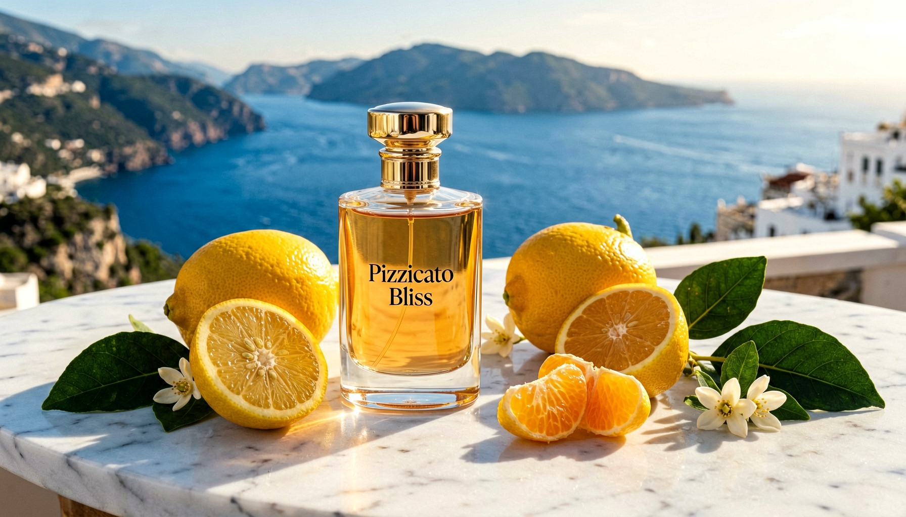
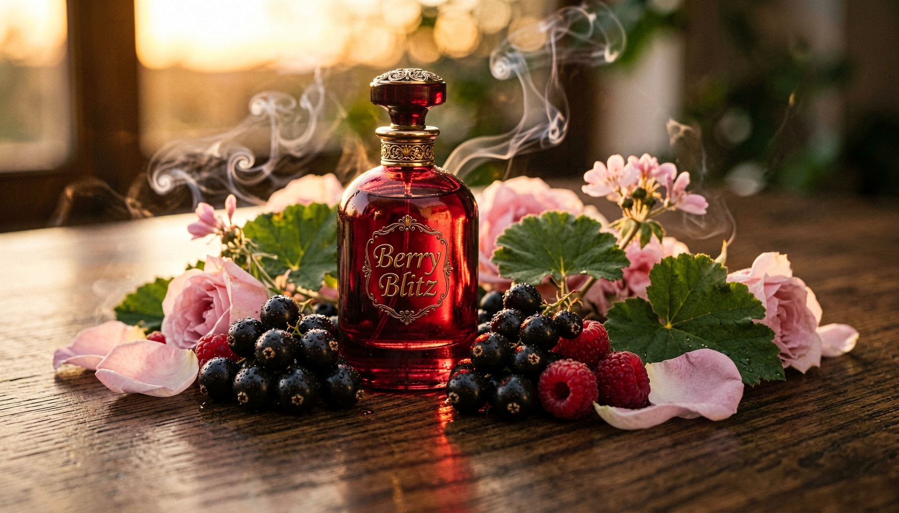
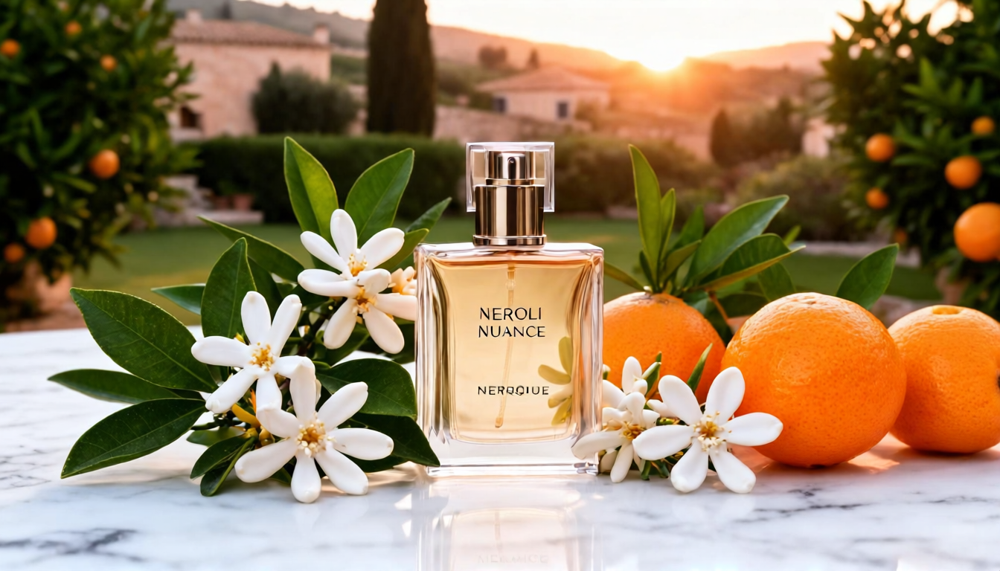
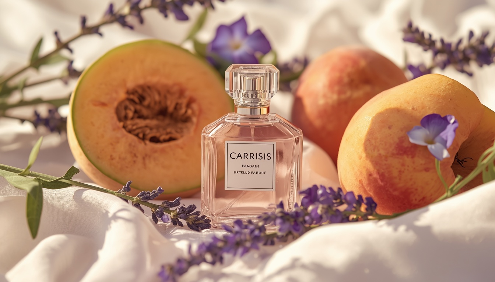
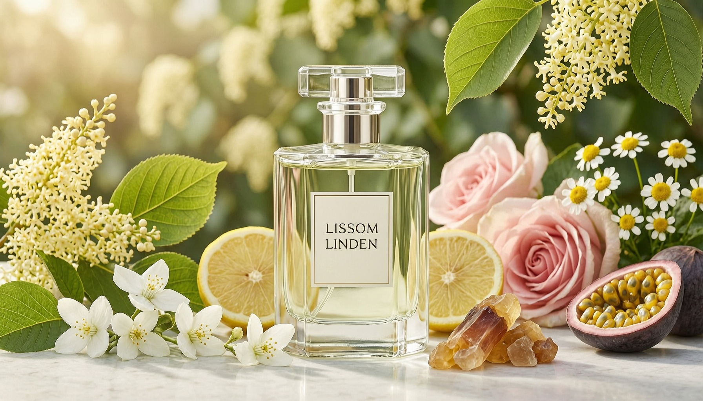

Introduction
Finding the perfect summer perfume isn't always easy. High temperatures can make heavy fragrances feel overwhelming, while some fresh perfumes disappear after only a short time.
The best summer perfumes combine refreshing citrus, soft florals, green botanical notes, and impressive longevity. Whether you're spending the day at the beach, enjoying brunch with friends, or heading to the office, the right fragrance should feel light, elegant, and comfortable from morning until evening.
In this guide, we've selected five outstanding summer perfumes for women that deliver freshness, sophistication, and lasting performance throughout the warmest months of 2026.
Table of Contents
- Pizzicato Bliss
- Berry Blitz
- Neroli Nuance
- Carissis
- Lissom Linden
- Final Verdict
- Frequently Asked Questions
1. Pizzicato Bliss – Best Citrus Summer Perfume for Women

Fragrance Notes
- Sicilian Lemon
- Bergamot
- Mandarin
- Tuscan Fig
- Neroli
- Galbanum
What Does Pizzicato Bliss Smell Like?
Pizzicato Bliss opens with sparkling Sicilian lemon, bergamot, and juicy mandarin, creating an instantly fresh and uplifting first impression. From the very first spray, it captures the vibrant spirit of the Mediterranean with a scent that feels bright, clean, and naturally elegant.
As the fragrance develops, Tuscan fig introduces a soft fruity sweetness that blends beautifully with the citrus opening, while neroli adds a delicate floral touch that remains airy and refined. The composition stays balanced without becoming overly sweet or overpowering.
The dry-down is where Pizzicato Bliss truly stands out. Galbanum brings a sophisticated green, slightly resinous character that adds depth and keeps the fragrance interesting for hours. The result is a refined summer perfume that feels effortlessly fresh from morning until evening.
Performance & Longevity
Citrus fragrances are often known for fading quickly, but Pizzicato Bliss delivers impressive performance for a citrus fragrance. Its balanced botanical composition allows the freshness to remain vibrant while the green base provides lasting depth throughout the day.
- Longevity: Around 6–8 hours
- Projection: Moderate
- Best Performance: Warm spring and summer days
Who Should Wear It?
Its versatile character makes it an excellent choice for women who appreciate fresh citrus fragrances with a refined and elegant style.
- Beach vacations
- Outdoor brunches
- Daily office wear
- Weekend outings
- Hot summer afternoons
Pros
- Natural and vibrant citrus opening
- Refreshing without being overly sharp
- Excellent longevity for a citrus fragrance
- Smooth transition into a refined green dry-down
- Comfortable even in very hot weather
Cons
- May feel too fresh for lovers of sweet gourmand perfumes.
- The green dry-down may be unusual for those who prefer classic fruity fragrances.
Final Verdict
If you're searching for a bright, elegant, and long-lasting summer perfume, Pizzicato Bliss is one of the strongest choices. It captures the spirit of the Mediterranean through vibrant citrus, soft florals, and a refined botanical base that remains enjoyable throughout the day.
If fresh citrus fragrances are your signature during summer, Pizzicato Bliss deserves a place in your summer fragrance collection.
2. Berry Blitz – Best Fruity Summer Perfume for Women

Fragrance Notes
- Blackcurrant
- Red Berries
- Rose
- Geranium
- Cedarwood
- Frankincense
What Does Berry Blitz Smell Like?
Berry Blitz opens with an energetic burst of blackcurrant and juicy red berries, creating a bright and refreshing first impression. The fruity opening feels vibrant and natural, offering sweetness without becoming overpowering.
As the fragrance develops, rose and geranium create an elegant floral heart. The rose adds softness and femininity, while geranium introduces a fresh green nuance that keeps the composition balanced and sophisticated instead of overly sweet.
The dry-down reveals a refined blend of cedarwood and frankincense, adding warmth, depth, and a subtle woody character. This smooth transition gives Berry Blitz a modern signature that remains fresh while feeling luxurious from day to night.
Performance & Longevity
Despite its bright fruity opening, Berry Blitz offers impressive longevity for a summer perfume. The fragrance gradually evolves into a warm woody base while maintaining its elegant character throughout the day.
- Longevity: Around 6–8 hours
- Projection: Moderate
- Best Performance: Warm days and summer evenings
Who Should Wear It?
Berry Blitz is an excellent choice for women who appreciate fruity fragrances with a refined and sophisticated finish.
- Summer dinners
- Evening events
- Weekend outings
- Casual dates
- Everyday wear with a unique twist
Pros
- Natural and vibrant berry opening
- Smooth transition from fruity to woody
- Elegant floral balance
- Excellent longevity for a summer perfume
- Suitable for both daytime and evening wear
Cons
- May not appeal to those who prefer fresh citrus fragrances.
- The fruity opening may feel slightly bold for minimal fragrance lovers.
Final Verdict
Berry Blitz perfectly balances juicy berries, elegant florals, and warm woody notes, creating a fragrance that feels playful, sophisticated, and easy to wear.
If you're looking for a fruity summer perfume with excellent longevity and a refined finish, Berry Blitz is one of the standout choices for 2026.
3. Neroli Nuance – Best Floral Summer Perfume for Women

Fragrance Notes
- Citrus
- Neroli
What Does Neroli Nuance Smell Like?
Neroli Nuance proves that floral perfumes can remain refreshing even during the hottest summer days. It opens with sparkling citrus notes that create a bright, clean, and uplifting first impression before the elegant neroli gradually takes center stage.
As the fragrance develops, neroli becomes softer and slightly honeyed, adding a refined floral elegance without ever feeling heavy. The composition evolves naturally with body heat, making it especially comfortable and enjoyable in warm weather.
Unlike many floral perfumes that become overpowering in summer, Neroli Nuance remains light, airy, and sophisticated while offering remarkable depth and long-lasting freshness.
Performance & Longevity
Neroli Nuance delivers impressive longevity for a fresh floral fragrance. It maintains its elegant character for hours while preserving the bright citrus freshness that makes it perfect for warm weather.
- Longevity: Around 8–10 hours
- Projection: Moderate
- Best Performance: Warm spring and summer weather
Who Should Wear It?
Neroli Nuance is an excellent choice for women who appreciate elegant floral fragrances with a fresh, modern character.
- Office wear
- Summer weddings
- Garden parties
- Afternoon events
- Everyday elegance
Pros
- Beautiful natural neroli scent
- Fresh and elegant from start to finish
- Excellent performance in warm weather
- Long-lasting for a floral fragrance
- Perfect for both casual and formal occasions
Cons
- May feel too delicate for lovers of heavy gourmand or woody fragrances.
- Projection remains moderate rather than bold.
Final Verdict
Neroli Nuance combines sparkling citrus freshness with elegant neroli to create a refined summer fragrance that's both timeless and versatile. If you're searching for a sophisticated floral perfume that performs beautifully in warm weather, it's one of the best choices for 2026.
Its graceful balance of freshness and floral elegance makes it suitable for both everyday wear and special occasions throughout the summer.
4. Carissis – Best Summer Perfume for Lavender Lovers

Fragrance Notes
- Melon
- Lavender
- Caraway
- Styrax
- Rose
- Peach
- Ambrette Seed
- Violet Leaf
What Does Carissis Smell Like?
Carissis offers a unique interpretation of a summer fragrance. Rather than relying on vibrant citrus or intense fruity notes, it creates a soft and intimate scent that feels like a natural extension of your skin.
The fragrance opens with refreshing melon and aromatic lavender, creating a clean, airy, and relaxing first impression. A subtle touch of caraway introduces warmth and originality, giving the composition a refined character from the very beginning.
As it develops, delicate rose blends beautifully with peach and violet leaf, forming a smooth floral-fruity heart. Ambrette seed adds a natural skin-like warmth that becomes even more noticeable in warm weather, while styrax finishes the fragrance with a gentle resinous depth that remains elegant and never overwhelming.
Performance & Longevity
Despite its soft and delicate character, Carissis delivers impressive longevity while remaining comfortable throughout the day. Its skin-like warmth becomes even more beautiful as body temperature rises.
- Longevity: Around 8–10 hours
- Projection: Soft to Moderate
- Best Performance: Warm summer days and evenings
Who Should Wear It?
Carissis is an excellent choice for women who appreciate understated elegance and prefer refined fragrances that stay close to the skin.
- Daily wear
- Romantic evenings
- Office environments
- Minimalist fragrance lovers
- Anyone looking for a natural skin scent
Pros
- Beautiful balance of lavender and soft fruity notes
- Natural skin-like warmth from ambrette seed
- Elegant and never overwhelming
- Excellent longevity
- Develops beautifully as the skin warms
Cons
- Soft projection may not satisfy lovers of bold fragrances.
- Not ideal for those looking for a vibrant citrus scent.
Final Verdict
Carissis is a sophisticated summer fragrance that focuses on elegance rather than intensity. Its delicate lavender, soft fruits, botanical musk, and smooth woody nuances create a comforting scent that feels luxurious while remaining effortlessly wearable.
If you prefer subtle fragrances with excellent longevity and timeless elegance, Carissis is one of the finest summer perfume choices for 2026.
5. Lissom Linden – Best Long-Lasting Green Floral Summer Perfume

Fragrance Notes
- Linden Blossom
- Bergamot
- Rose
- Jasmine
- Passion Fruit
- Chamomile
- Frankincense
What Does Lissom Linden Smell Like?
Lissom Linden captures the peaceful atmosphere of an English summer garden in full bloom. It opens with sparkling bergamot and delicate linden blossom, creating a fresh, green, and naturally uplifting first impression.
As the fragrance develops, elegant rose and jasmine blend beautifully with a subtle touch of passion fruit, adding gentle fruity brightness without overpowering the floral heart. Chamomile introduces a calming herbal nuance that gives the fragrance a relaxed and comforting personality.
The dry-down is enriched by frankincense, bringing a smooth resinous warmth that adds depth while allowing the floral notes to remain fresh and noticeable for hours. The result is a sophisticated fragrance that feels elegant, natural, and quietly distinctive.
Performance & Longevity
Lissom Linden delivers impressive longevity for a green floral fragrance while maintaining its fresh and elegant character from the first spray until the final dry-down.
- Longevity: Around 8–10 hours
- Projection: Moderate
- Best Performance: Warm spring and summer days
Who Should Wear It?
Lissom Linden is an excellent choice for women who appreciate elegant floral fragrances with a fresh botanical character and timeless sophistication.
- Garden parties
- Afternoon gatherings
- Summer weddings
- Office wear
- Everyday elegance
Pros
- Elegant green floral composition
- Natural and sophisticated character
- Excellent longevity
- Smooth transition from citrus to floral to resinous notes
- Perfect for warm-weather wear
Cons
- May feel too subtle for lovers of sweet gourmand fragrances.
- The green floral profile is softer than bold fruity perfumes.
Final Verdict
Lissom Linden perfectly balances sparkling freshness, elegant florals, and gentle woody warmth. Its refined composition and excellent longevity make it one of the finest green floral perfumes for the summer season.
If you're looking for a graceful fragrance that feels fresh, sophisticated, and effortlessly wearable throughout the day, Lissom Linden is an outstanding choice for 2026.
Final Verdict
Choosing the perfect summer perfume depends on your personal style and fragrance preferences. Some women love vibrant citrus scents, while others prefer soft florals or elegant fruity compositions.
Each perfume featured in this guide offers something unique for the summer season:
- Pizzicato Bliss – Best for lovers of fresh Mediterranean citrus fragrances.
- Berry Blitz – Perfect for women who enjoy elegant fruity perfumes with a woody finish.
- Neroli Nuance – Ideal for refined floral fragrance lovers.
- Carissis – A soft, skin-like perfume for understated elegance.
- Lissom Linden – An excellent choice for women who appreciate fresh green floral fragrances.
No matter your preference, these five fragrances represent some of the finest summer perfumes for women in 2026, combining freshness, elegance, and impressive longevity for warm-weather wear.
Frequently Asked Questions
What is the best summer perfume for women in 2026?
The best summer perfume depends on your personal taste. Pizzicato Bliss is ideal for citrus lovers, Berry Blitz is perfect for fruity fragrance fans, while Neroli Nuance offers an elegant floral experience.
Which summer perfume lasts the longest?
Among the fragrances featured in this guide, Neroli Nuance, Carissis, and Lissom Linden offer the best longevity, lasting around 8–10 hours under normal conditions.
Are citrus perfumes good for hot weather?
Yes. Citrus fragrances are among the best choices for summer because they feel fresh, light, and refreshing, especially during warm days.
Can I wear floral perfumes during summer?
Absolutely. Fresh floral fragrances like Neroli Nuance and Lissom Linden are specifically designed to remain elegant and comfortable even in high temperatures.
How can I make my perfume last longer in summer?
Apply perfume to moisturized skin, spray it on pulse points such as the wrists and neck, and avoid rubbing the fragrance after application. Storing your perfume away from direct sunlight also helps preserve its quality.